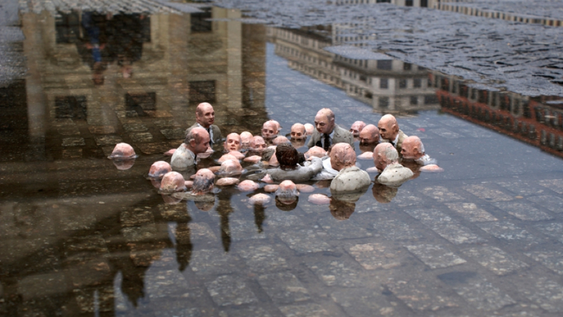

Teodora's blog
Contents:
A tale of two climate weeks
Posted on: 25.10.2019
The first tale: This leader gives herself a high five for confirming registration,
scoring a decent flight (with carbon offset also covered) and an “ok” hotel within walking distance.
She’s briefly scanned the agenda, has a general idea of her intentions for being there,
and is ready for her 10 minutes on a panel.
The second tale: This leader matches the above,
but has done so much more to make sure the impact of the trip – for establishing new contacts,
raising her profile, making sure her organization is visible in the conversation,
and their commitment to climate action is clear – is maximized.
She knows that her presence there can be a great thread in her company’s brand and climate action
storytelling.
She has done a much deeper dive on the overall agenda,
the specific and most critical sessions for her to attend,
and the key speakers she’d like to meet or say hello to.
She’s noticed how her contribution to the panel fits in with the session’s overall narrative,
and has written a topic bridging blog post for her organization’s site
to post a few days before the conference begins.
She’s been on Twitter for a few years,
but more recently started to zero in on key hashtags and has made a Twitter list of key influencers
who will also be there,
which she will take the time to monitor and engage with in advance.
She has a few links ready to share that serve as background for her speaking topic.
She does a few live tweets from the event in the day or hours before her appearance.
She is incredibly prepared, understanding the whole “vibe” of her session and her role in it for her panel.
After the panel, she responds and engages with anyone who tweeted a good comment or quoted her.
She also Twitter-thanks the organization and panel moderator for a productive session.
She writes down a few key notes, uses the Twitter stream as reminder notes,
and then outlines her idea for the follow up blog post she’ll pull together the following week.
"Phew"-she thinks. "This is a lot of work, but worth it, and why I only attend or speak at a few key
conferences a year".
When all is said and done, which leader can report back to her boss or Board on the connections made,
the media members met, the profile raised,
and the future partners discovered? Which one feels like the whole endeavor,
expense and carbon costs were worth being away from the office or usual work day, as well as her family?
Which tale will be yours this fall,
for Climate Week NYC ,
the Global Climate Action Summit or any of the others?
Original blog post:
Andrea learned

Statue by a Spanish street artist Isaac Cordal - "Politicians discussing global warming".
"New power" as social impact currency
Posted on: 25.10.2019.
I have not yet read the new book by Heimans and Timms,
New Power: How Movements Build, Businesses Thrive, and Ideas Catch Fire in Our
Hyperconnected World,
but everything about this excerpted article resonated so loudly that I wanted to quickly share
a few thoughts:
In both my recent writing and my conversations with clients,
I’ve been discussing the idea of leaders developing at-the-ready social capital that anticipates
opportunity.
When you consistently engage and build trusted relationships over time
you will be much more likely to nudge people “up” the participation scale
that Jeremy Heimans and Henry Timms write about here.
What I learned through my involvement with KEXP’s International Clash Day aligns with the co-authors’
guidelines as well.
While this Seattle-based nonprofit, community radio station had celebrated the event in the past,
they were really able to ramp up global city, record store,
and radio station involvement this year by making it super easy to sign on.
They also made it “self-help” to quickly download materials that supported the effort,
including art work in appropriate social media formats. Worth note: KEXP did not demand that their
brand be “all over” whatever it was that other stations or entities were up to.
It was about the cause.
But, of course, many participants who got involved of their own accord did “love up” KEXP in return.
Along the way, the event made an already supportive collective of community and college radio stations
such stronger and more resilient for future “actions.”
To build a lasting movement, followers need to be moved up the participation scale.
Courtesy of Jeremy Heimans and Henry Timms.
Sharing other’s content or ideas is the transitional step between typical “old power“
and this incredible “new power“.
This aligns with a phase I’ve called “loving up” in my own 5 L’s of social leadership theory:
Listen, Learn, Love Up, Leverage, and Lead.
Most organizations still operate in old power ways even when they are using supposedly “social” media.
The talk about themselves, they communicate in the same old “look at us now” manner,
and while they might “like” an occasional external tweet, for example, they rarely re-share a thing,
with any intentional amplification or “cheering” words.
That keeps them from being able to move into the orange.
It seems like Heimans and Timms are not introducing anything completely new here.
They are instead, perhaps, trying to hit us over our wooden heads with something really obvious.
Traditional leaders will continue to grasp ever-more tightly to their “owning the power” frame.
But, times up. Let’s all celebrate “new power” to the people!
I’m all about this.
It spreads the love as much as it distributes the work,
and amplifies your cause to whole new layers of audiences or stakeholders.
I’d strongly suggest those of us in sustainability, climate action and social impact, especially,
read and apply this book to our daily missions.
Original blog post:
Andrea learned

#Team trees
Posted on: 26.10.2019.
What is #Team trees? #Team trees is a challenge started by a famous youtuber
Mr.Beast . His fans suggested
it as an idea for 20 mil. subscribers. They also suggested he should team up with other famous youtubers
so that's exactly what he did.
He teamed up with Mark Rober,
ASAP Science,
Pewdiepie ,
The Slow Mo Guys ,
The Try Guys ,
iJustine ,
Smarter Every Day
and many others. The goal is basically to plant 20 000 000 trees by 2020.
Mark Rober started by using robotics to plant a bunch of trees with the help of
DroneSeed .
They are also working with the
Arbor Day Foundation in an agreement that
for every dollar they give them,
the foundation will plant 1 tree.
They also need all the help they can get to complete their goal. They have an official
Team trees website where you
can donate a dollar or more to plant trees.
Biggest contributors as of now:
| Tobi Lutke |
1 000 001 trees |
| Elon Musk |
1 000 000 trees |
| ELF Development A/S |
250 000 trees |
| Susan Wojcicki |
200 000 trees |
| Jack Dorsey |
200 000 trees |